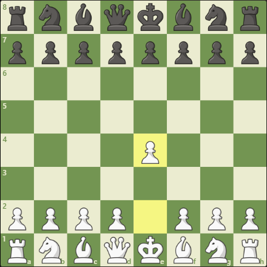

Cờ vua là một trong những trò chơi trí tuệ phổ biến nhất thế giới; nó được nói đến không chỉ như là một trò chơi mà còn là nghệ thuật, khoa học và thể thao. Cờ vua đôi khi được nhìn nhận như là trò chơi chiến tranh trừu tượng; cũng như là "các cuộc đấu trí tuệ", và việc chơi cờ vua được coi như là một cách để rèn luyện tư duy và bản lĩnh.
II. Khai cuộc
ĐỊNH NGHĨA: Khai cuộc cờ vua là giai đoạn đầu tiên của trận đấu, bắt đầu từ nước đi đầu tiên cho đến khi các quân cờ đã được triển khai ra khỏi vị trí ban đầu. Thời gian này thường kéo dài từ 10 đến 20 nước đi đầu tiên, tùy thuộc vào từng tình huống cụ thể của ván cờ. Giai đoạn khai cuộc cờ Vua không chỉ là lúc để chuẩn bị cho sự đối đầu giữa hai bên mà còn là cơ hội để người chơi xây dựng một cấu trúc quân cờ ổn định. Việc thực hiện các nước đi chủ động nhằm kiểm soát trung tâm bàn cờ và phát triển quân cờ một cách hiệu quả sẽ đặt nền móng cho giai đoạn giữa cuộc. Một khai cuộc mạnh mẽ có thể tạo ra áp lực lên đối thủ và buộc họ phải chơi theo cách mà bạn mong muốn.

VAI TRÒ: Khai cuộc cờ vua đóng vai trò quan trọng trong mỗi ván cờ bởi vì nó quyết định đến sức mạnh và sự phát triển của các quân cờ. Một khai cuộc tốt sẽ:
Tạo ra cấu trúc quân cờ vững chắc giúp bảo vệ vua khỏi những đòn tấn công sớm.
Kiểm soát không gian, đặc biệt là các ô trung tâm, để mở rộng khả năng di chuyển và tấn công của quân cờ.
Phát triển quân cờ một cách đồng bộ và nhanh chóng, giúp bạn có thể tham gia vào cuộc chiến càng sớm càng tốt.
Đặt đối thủ vào thế bị động, khiến họ gặp khó khăn trong việc tìm kiếm các nước đi hợp lý.